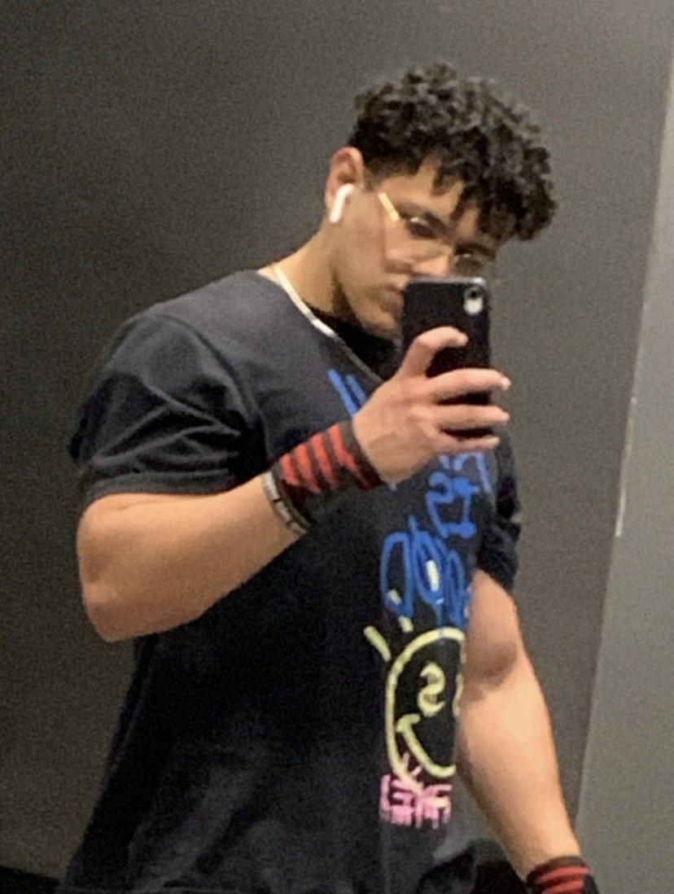
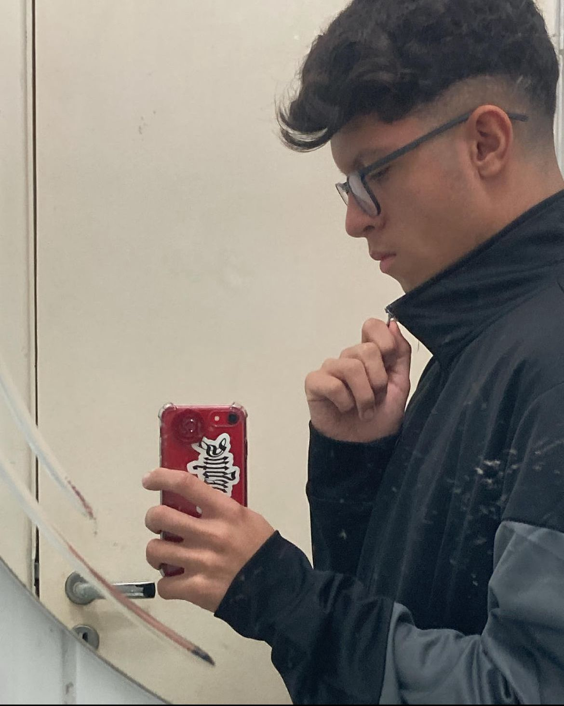
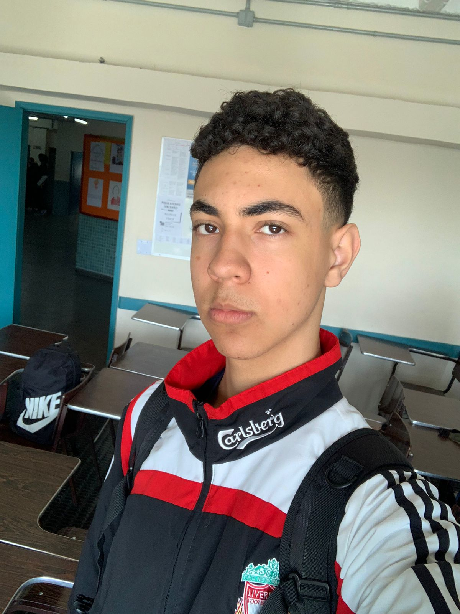
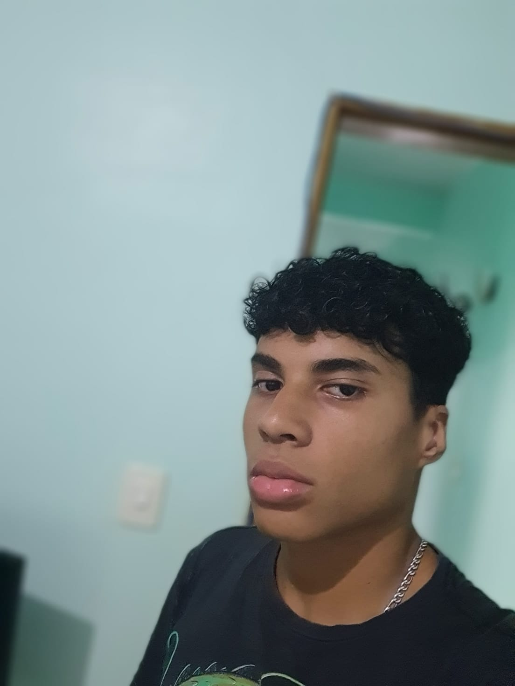
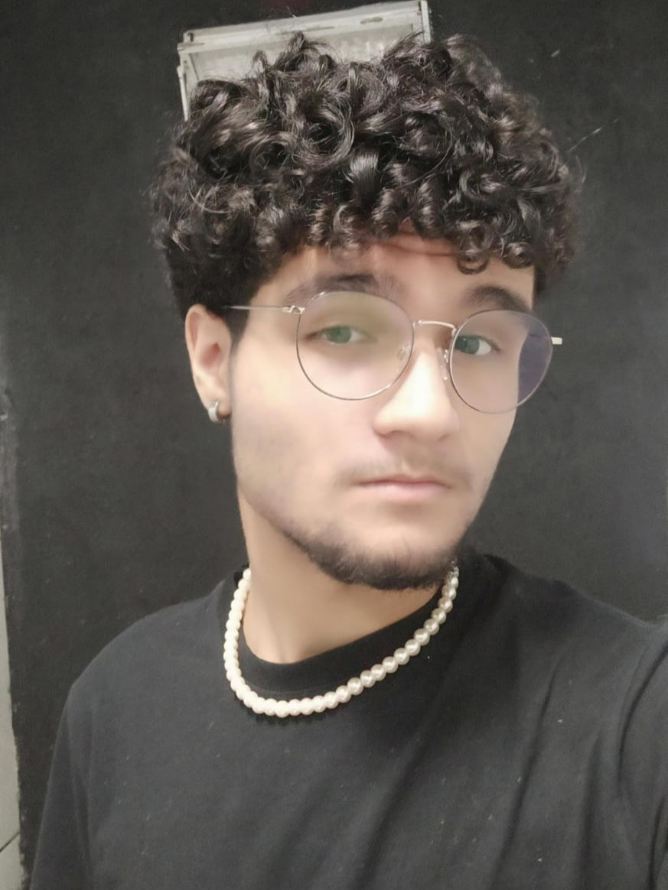
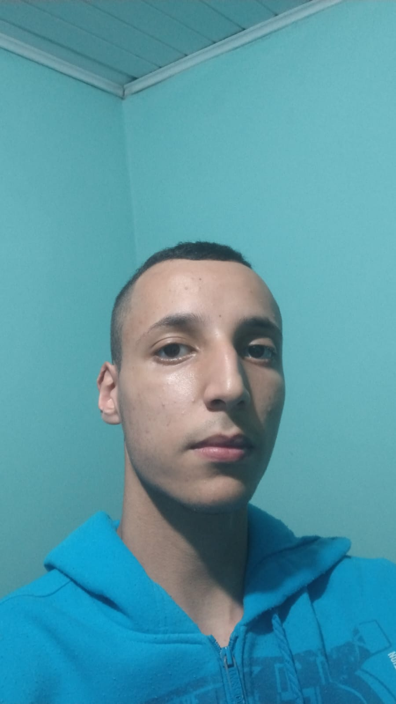

Demon Blade Entertainment
A recém fundada empresa Demon Blade, produz e publica jogos dos mais diversos generos visando a amplitude de produções que abrangem os mais diversos públicos e nichos. Um de seus maiores objetivos é o incentivo a programação de jogos em prol de produções artísticas cujo a essência se centra na paixão e não, exclusivamente, em lucro monetário. Ao decorrer das décadas, é perceptível que o desenvolvimento de jogos, nacionalmente, é pouco motivado. A empresa busca trazer oportunidades de ingresso para uma comunidade cujo ideal é semelhante e trazer a antiga leva de jogos, onde a preocupação primária é trazer uma experiencia memorável audiovisual interativa.
Tales of Victus: The Minotaur's Labyrinth
O jogo "Tales of Victus: The Minotaur's Labyrinth" consiste em uma experiência baseada no gênero "escape room", que
inclui uma série de quebra-cabeças necessários para poder escapar de um ambiente delimitado. Em um passado distante,
havia uma ilha localizada na Grécia, chamada Creta, na qual seu rei era Minos. Lá era o local onde vivia uma das criaturas
mais temidas da região, o Minotauro.
A história começa quando as forças de Victus, o protagonista, são colocadas à prova. Victus é um garoto ateniense de 13 anos e
foi selecionado como um dos jovens que serviriam de sacrificío para o Minotauro. Em choque, ele e sua família se sentem extremamente
tristes e de lutopelo desafortunado destino, menos o pai. Dimitrius, pai de Victus, possui esperança e convicção de que seu filho será
capaz de escapar do labirinto:
"Victus, não caia por terra diante deste infortúnio, você tem mais capacidade do que imagina. Confio em você para superar o Minotauro e
emergir vitorioso. Sua bravura será a luz que o guiará para o caminho da liberdade."
O jovem Victus , no momento em que chega ao labirinto junto com as demais oferendas, fica totalmente paralisado de medo, pensando somente no
pior. Porém, com o tempo Victus reflete muito sobre o que seu pai lhe disse e, após entender a mensagem por completo, seu coração se acalma
e seu espírito se enche de bravura para poder escapar do labirinto pois, realizando esse feito, ele geraria esperanças para os atenienses
de que um dia todo esse mal acabaria. Sem tempo a perder, Victus se levanta, enxuga suas lágrimas e se prepara para o desafio.
O jogo "Tales of Victus: The Minotaur's Labyrinth" consiste em uma experiência baseada no gênero "escape room", que
inclui uma série de quebra-cabeças necessários para poder escapar de um ambiente delimitado. Em um passado distante,
havia uma ilha localizada na Grécia, chamada Creta, na qual seu rei era Minos. Lá era o local onde vivia uma das criaturas
mais temidas da região, o Minotauro.
A história começa quando as forças de Victus, o protagonista, são colocadas à prova. Victus é um garoto ateniense de 13 anos e
foi selecionado como um dos jovens que serviriam de sacrificío para o Minotauro. Em choque, ele e sua família se sentem extremamente
tristes e de lutopelo desafortunado destino, menos o pai. Dimitrius, pai de Victus, possui esperança e convicção de que seu filho será
capaz de escapar do labirinto:
"Victus, não caia por terra diante deste infortúnio, você tem mais capacidade do que imagina. Confio em você para superar o Minotauro e
emergir vitorioso. Sua bravura será a luz que o guiará para o caminho da liberdade."
O jovem Victus , no momento em que chega ao labirinto junto com as demais oferendas, fica totalmente paralisado de medo, pensando somente no
pior. Porém, com o tempo Victus reflete muito sobre o que seu pai lhe disse e, após entender a mensagem por completo, seu coração se acalma
e seu espírito se enche de bravura para poder escapar do labirinto pois, realizando esse feito, ele geraria esperanças para os atenienses
de que um dia todo esse mal acabaria. Sem tempo a perder, Victus se levanta, enxuga suas lágrimas e se prepara para o desafio.
Como foi produzido Tale Of Victus
Entenda de uma maneira profunda sobre os criadores de tale...
Gabriel Vieira
Gabriel Vieira foi o responsável pela criação deste site e também ajudou na parte de design e áudio do jogo. Conseguiu desenvolver o site através das tecnologias que domina: HTML, CSS e JavaScript, além de forte conhecimento na área de design, o que fez com que também ajudasse na parte do design do jogo e também no áudio do jogo
Andrey Lourenço
O produtor sonoro Andrey Lourenço ficou responsável na produção geral de sons e efeitos sonoros na criação de Tales of Victus: The Minotaur's Labyrinth, tendo a ajuda de Gabriel Vieira e Igor Interliche, assim debatendo as melhores estratégias na qual foram usadas.
Filipe Evangelista
O desenvolvedor Filipe Evangelista foi responsável pela direção de arte do game, desenhando e auxiliando os demais desenhistas em suas respectivas tarefas. Ele também foi responsável pela principal ideia do enredo do game, no qual, com as boas propostas do restante dos integrantes, se empenhou e deu o seu melhor para criar uma boa história que cativasse o público.
>Flávio Nascimento
O desenvolvedor Flávio Nascimento ficou encarregado de auxiliar na parte artística e na programação do jogo. Também participou da montagem da monografia, ajudando nas pesquisas sobre diversos assuntos.
>João Vitor Lopes
O game developer João Vitor Lopes Silva foi responsável por toda a programação do jogo e implementação de mecãnicas, jogabilidade e level design. Também atuou como designer menor, tendo alguns modelos realizados. Seu objetivo no desenvolvimento do jogo foi trazer a estética antiga e jogabilidade dos consoles Atari.
>Tomás Barboza
O desenvolvedor Tomás Barboza esteve presente na parte do desenvolvimento prático e artístico, auxiliando na construção das linhas de código e das artes gráficas presentes no jogo. Também foi responsável pela montagem do banner acadêmico.
>Igor Interliche
O integrante Igor Interliche Souza foi responsável em trabalhar na arte do jogo, contribuindo junto com outros integrantes no desenvolvimento de um design cativante para o jogo, também ajudou nas interfaces gráficas como menus, HUDs e etc.p> >
Agradecimentos
Somos agradecidos aos nossos familiares, que nos ajudou e encorajou a dar o nosso melhor. Somos agradecidos também ao Colégio Cruzeiro do Sul, por ter nos dispolibilizados uma ótima experiência. Também agradecemos ao professor Ricardo Bonini, que nos ajudou a superar todos nosso desafios e diversidades, e nos guiou para termos um melhor resultado. E somos gratos por todos vocês que ficaram até aqui! Agradecemos pelo tempo que vocês tiveram para nos dar atenção! Muito obrigado por tudo!